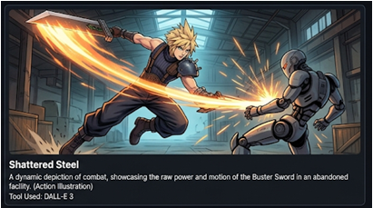
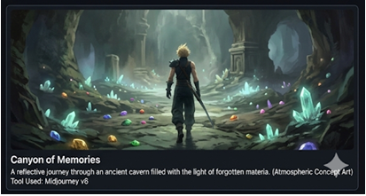
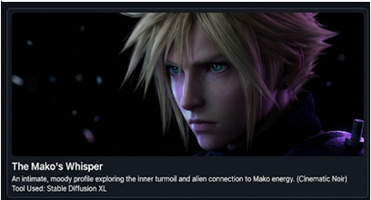
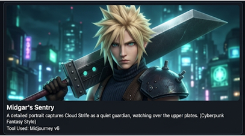

An AI-Generated Art Museum | Exploring the creative possibilities of generative AI

A portrait of Cloud standing resolute, the Buster Sword gleaming with ethereal light. The composition captures the internal struggle between individual identity and fragmented memories in cyberpunk neon tones.
Generated with: Midjourney v6

The oppressive geometry of Midgar's undercity surrounds Cloud as he navigates the labyrinthine slums. Neon rain reflects off wet metal surfaces, creating a dreamlike atmosphere of isolation and purpose.
Generated with: DALL-E 3

A surreal visualization of the climactic encounter where Cloud faces the manifestation of his greatest fear and obsession. The composition spirals with impossible geometries and fractured perspectives.
Generated with: Midjourney v6

In final meditation, Cloud finds clarity. A moment of serene transcendence where the boundaries between consciousness and the digital realm dissolve, offering redemption through understanding.
Generated with: DALL-E 3